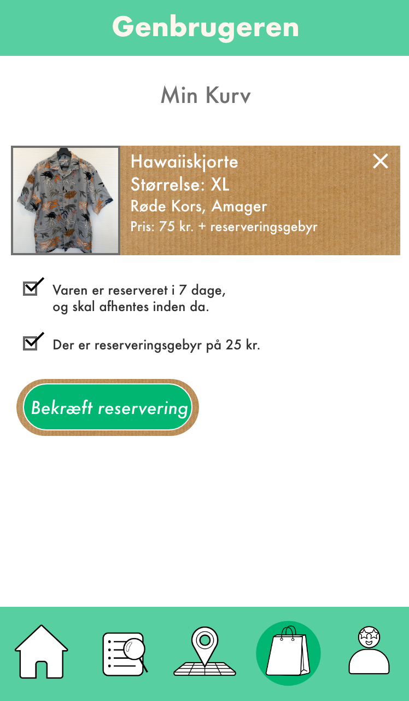
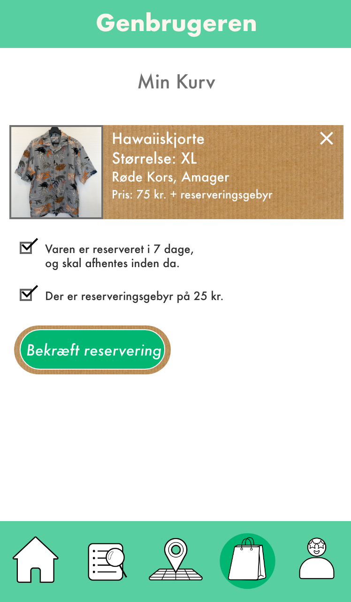

Flow 3 - Byg en app

I projektet for dette flow, skal du designe og skabe en prototype på en mobil app. Du vælger selv den type enhed/smartphone og tablet du udvikler til, såvel som operativsystem. Du skal bruge Adobe XD til at demonstrere skærmene i appen og deres flow samt bruge Adobe Illustrator til grafik til interfacet og Adobe Photoshop til billeder.
Du skal vælge en virksomhed eller organisation og forestille dig at de vil gå på markedet med et produkt/service, hvor samspil med ét eller flere af FNs verdensmål bliver et væsentligt element i produktets/servicens kvalitet for kunde eller bruger, samt hvor produkt/service naturligt har en app som interface for at få adgang til elementer af produkt/service.
Min opgave
Jeg valgte at lave en app til genbrugstøj for organisationer som Røde Kors og Red Barnets genbrugsforretninger. Målgruppen var unge mennesker der går op i mode og miljø. Du kan se min rapport på opgaven her:
Rapport.pdf
Jeg fik god feedback på min app. Min lærer spurgte ind til prisen af reservationsgebyret, da det måske var lidt højt. Derudover fik jeg at vide at pap-farven, jeg havde valgt til menuen, måske kunne fremstå lidt for retro og rustik (hvilket også var meningen), men man kunne på den måde risikere at ramme en for smal målgruppe.
Min løsning på dette var at ændre menu-barens farve til noget, der virker lidt mere friskt, for at give et indtryk af at genbrugstøj også kan være et friskt pust til ens tøjstil. Jeg har valgt at gå fra pap-teksturen over til en lysere udgave af logoets grønne farve (#00B670) , da det stadig signalere miljøbevidsthed. Jeg har valgt at beholde papteksturen på de bokse med produkterne på. Selvom det er en mindre detalje, har jeg sat reservationsgebyret fra 50 kroner ned til 25 kroner. Da jeg var meget tilfreds med resultatet af opgaven, har jeg ikke valgt at lave større ændringer.
Farvekode
Logo: #00B670
Ny farve til menuen: #58CFA1
 

Jeg har lært at forholde mig til brugerens behov og forståelse af brugerflader. Derudover har jeg lært at udvikle og bruge personaer til, at definere målgrupper og forholde mig til deres behov. Jeg har lært at holde fast i en visuel stil, hvor gentagelse gavner. Udover dette ser jeg frem til at lære, at udvikle en rigtig app.